Implements a thruster control system. Uses a CAD model of the spacecraft.
------------------------------------------------------------------------ See also DeviceProperties, PIDMIMO, QMult, QPose, QTForm, Constant, NPlot, Plot2D, TimeGUI, Cross, Dot, RK4, Simplex, JD2000, El2RV, SunV1, Accel ------------------------------------------------------------------------
Contents
- Global for the TimeGUI
- Constants
- Spacecraft model
- The control sampling period and the simulation integration time step
- Number of sim steps
- Plot every nPMax steps
- Print the time to go message every nTTGo steps
- Spacecraft Inertias
- Design the control loops with PIDMIMO
- Initialize the control system
- Plotting arrays
- Initial conditions
- Get ideal force magnitude and direction for thrusters
- Initialize the time display
- Run the simulation
%-------------------------------------------------------------------------- % Copyright (c) 2003, 2006 Princeton Satellite Systems, Inc. % All rights reserved. %--------------------------------------------------------------------------
Global for the TimeGUI
%------------------------ global simulationAction simulationAction = ' ';
Constants
---------
degToRad = pi/180; radToDeg = 180/pi;
Spacecraft model
----------------
g = load('SatWThrusters');
The control sampling period and the simulation integration time step
--------------------------------------------------------------------
tSamp = 0.5;
Number of sim steps
-------------------
nSim = 1000;
Plot every nPMax steps
----------------------
nP = 0; kP = 0; nPMax = 2; nPlot = nSim/nPMax;
Print the time to go message every nTTGo steps
-----------------------------------------------
nTTGo = 1000;
Spacecraft Inertias
-------------------
inr = g.mass.inertia; invInr = inv(inr); tDist = [0;0;0]; % can add disturbances using this variable % ------------------------------------------------------------------------------
Design the control loops with PIDMIMO
------------------------------------------------------------------------------
inr = 1.0; % unit inertia zeta = 1.0; % damping ratio omega = 0.1; % natural frequency tauInt = 100; % integrator time constant wR = 1.0; % derivative term roll-off frequency [a, b, c, d] = PIDMIMO( inr, zeta, omega, tauInt, wR, tSamp, 'Delta' ); % rEA_prop
Initialize the control system
-----------------------------
xRoll = [0;0]; xPitch = [0;0]; xYaw = [0;0]; qTarget = [0.99619;-0.087156;0;0];
Plotting arrays
---------------
x1Plot = zeros( 7,nPlot); x2Plot = zeros( 6,nPlot); aPlot = zeros( 1,nPlot); tPlot = zeros( 1,nPlot); pWPlot = zeros(24,nPlot);
Initial conditions
------------------ q w
x1 = [[1;0;0;0];[0;0;0]];
el = [Constant('earth radius mean')+500 45*pi/180 0 0 0 0];
[r,v] = El2RV(el);
x2 = [r;v];
dTSim = tSamp;
mET = 0;
jD = JD2000;
roll = 0;
pitch = 0;
yaw = 0;
Get ideal force magnitude and direction for thrusters
%------------------------------------------------------ rEA_prop = DeviceProperties('hydrazine thruster'); F = zeros(3,24); A = zeros(3,24); for k = 1:24 rEA_prop(k) = g.component(k+2).deviceInfo; F(:,k) = rEA_prop(k).thrustCoefficient(1)*rEA_prop(k).unitVector; A(:,k) = Cross( rEA_prop(k).positionVector - g.mass.cM, F(:,k)); end
Initialize the time display
%---------------------------- [ ratioRealTime, tToGoMem ] = TimeGUI( nSim, 0, [], 0, tSamp, 'REAControl' );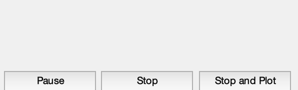
Run the simulation
------------------
for k = 1:nSim % Display the status message %--------------------------- [ ratioRealTime, tToGoMem ] = TimeGUI( nSim, k, tToGoMem, ratioRealTime, tSamp ); % ------------------------------------------------------------------------------ % Sensors % ------------------------------------------------------------------------------ % Star Camera Angle % ----------------- [uSun,rSun] = SunV1( jD, x2(1:3) ); uCamera = QTForm( x1(1:4), [0;0;1] ); aCamera = acos(Dot(uSun,uCamera)); % ------------------------------------------------------------------------------ % The Attitude Control System % ------------------------------------------------------------------------------ % The attitude control loops % -------------------------- % torque = AttitudeControlLaw( params ); qTargetToBody = QPose( QMult( QPose(x1(1:4)), qTarget ) ); % Small angle convention %----------------------- angleError = -2*qTargetToBody(2:4); % Controller blocks, delta format. Each axis uses the same gains. %---------------------------------------------------------------- accel = zeros(3,1); accel(1) = c*xRoll + d*angleError(1); xRoll = xRoll + a*xRoll + b*angleError(1); accel(2) = c*xPitch + d*angleError(2); xPitch = xPitch + a*xPitch + b*angleError(2); accel(3) = c*xYaw + d*angleError(3); xYaw = xYaw + a*xYaw + b*angleError(3); torque = -g.mass.inertia*accel; % Distribute torque command to thrusters % -------------------------------------------------------- pulsewidthDemand = Simplex( ones(1,24), A, torque, 1 ); demandError = norm( A*pulsewidthDemand - torque ); pulsewidthDemand = tSamp*pulsewidthDemand; % Ideal thruster model - apply pulsewidths exactly as calculated %--------------------------------------------------------------- force = F*pulsewidthDemand; % ------------------------------------------------------------------------------- % Disturbances % ------------------------------------------------------------------------------- % Add simple periodic disturbance tDist = [1;0;0.5]*1e-3*sin(0.0011*mET); fDist = [0;0;0]; % ------------------------------------------------------------------------------- % Update the equations of motion % ------------------------------------------------------------------------------- x1 = RK4('FRB',x1,dTSim,mET,inr,invInr,torque+tDist); x2 = RK4('FOrbCart',x2,dTSim,jD,(force+fDist)/g.mass.mass); mET = mET + dTSim; jD = jD + dTSim/86400; % Plotting % -------- if( nP == 0 ) kP = kP + 1; x1Plot(:,kP) = x1; x2Plot(:,kP) = x2; aPlot(:,kP) = aCamera; pWPlot(:,kP) = pulsewidthDemand; tPlot(:,kP) = mET; nP = nPMax - 1; else nP = nP - 1; end % Time control %------------- switch simulationAction case 'pause' pause simulationAction = ' '; case 'stop' return; case 'plot' break; end end j = 1:kP; tPlot = tPlot(j); Plot2D(tPlot,x1Plot( 1: 4,j),'Time (sec)',['Qs';'Qx';'Qy';'Qz'],'Quaternion') Plot2D(tPlot,x1Plot( 5: 7,j),'Time (sec)',['Wx';'Wy';'Wz'],'Body Rates') Plot2D(tPlot,x2Plot( 1:3,j),'Time (sec)',['X';'Y';'Z'],'Position (km)') Plot2D(tPlot,aPlot(:,j),'Time (sec)',['Angle (rad)'],'Camera angle from the sun') Plot2D(tPlot,pWPlot(1:4,j),'Time (sec)',['1';'2';'3';'4'],'X Pos pulsewidths') Plot2D(tPlot,pWPlot(5:8,j),'Time (sec)',['1';'2';'3';'4'],'Y Pos pulsewidths') Plot2D(tPlot,pWPlot(9:12,j),'Time (sec)',['1';'2';'3';'4'],'Z Pos pulsewidths') Plot2D(tPlot,pWPlot(13:16,j),'Time (sec)',['1';'2';'3';'4'],'X Neg pulsewidths') Plot2D(tPlot,pWPlot(17:20,j),'Time (sec)',['1';'2';'3';'4'],'Y Neg pulsewidths') Plot2D(tPlot,pWPlot(21:24,j),'Time (sec)',['1';'2';'3';'4'],'Z Neg pulsewidths') %-------------------------------------- % $Date$ % $Id: 443a05cba54d6b64a7b8e5673cea67a17037eaf4 $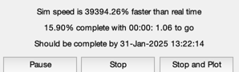 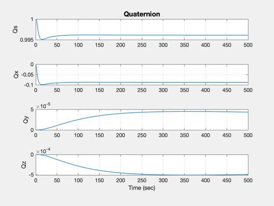 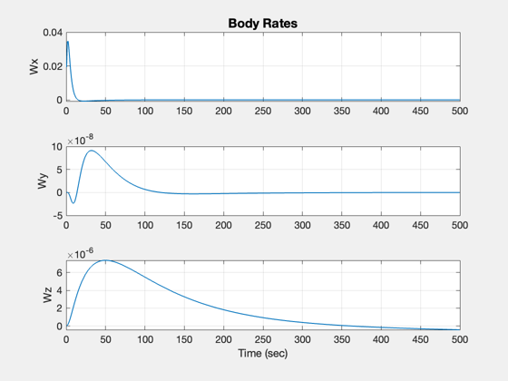 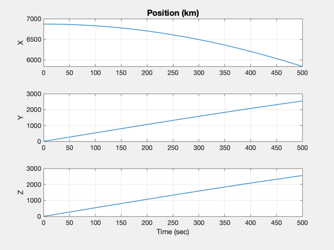 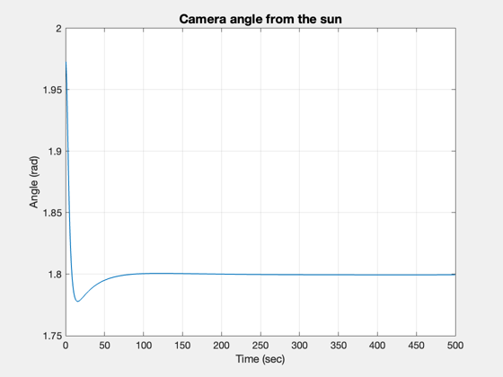 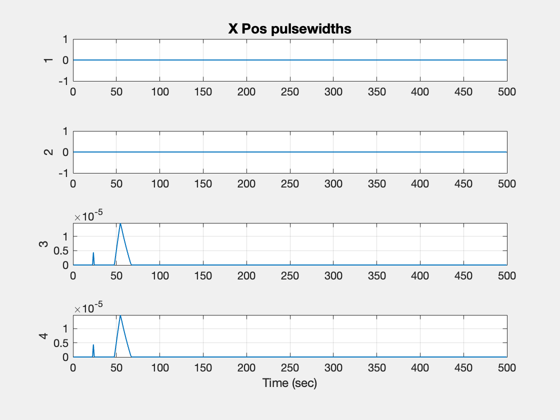 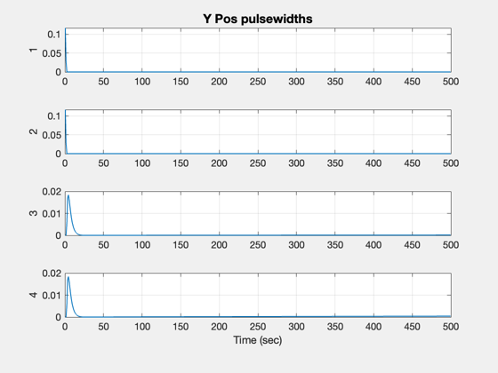 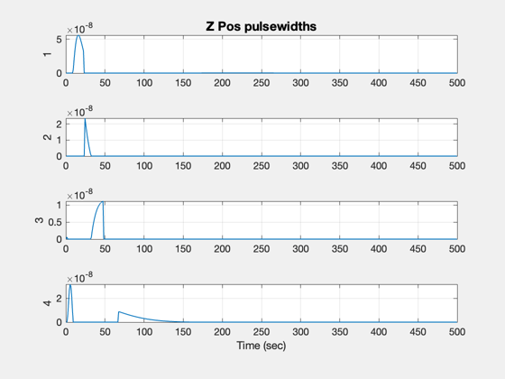
 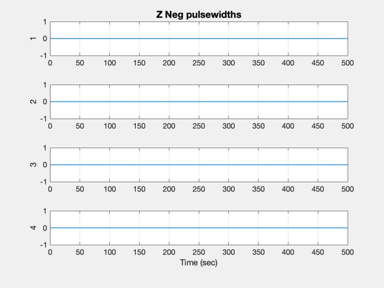
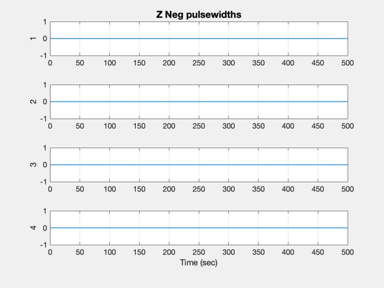